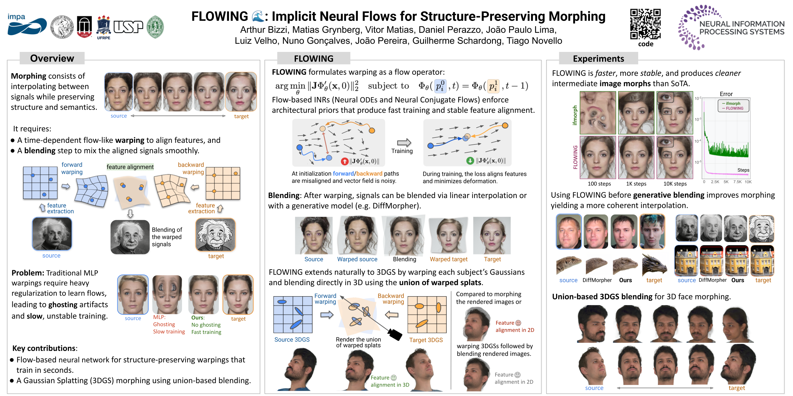

Given source and target images \(I^0, I^1\) we extract landmark pairs \((p^0_i,p^1_i)\) with a feature extractor. We train a flow \(\phi\) such that \(\phi(p^0,t) = \phi(p^1,t-1)\), effectively mapping \(p^0\) to \(p^1\). At inference, to blend the images at time \(t\), we warp \(I^0\) forward by \(t\) units and \(I^1\) and backward by \(t-1\) units, then blend them together with methods such as linear blending or generative models.
Features
Our approach supports both images and 3D Gaussian data. Below, we show morphing between both face images and 3D Gaussian Splatting faces.
Proper warping before blending may be used for better feature transfer. On the example below, we morph two pictures of Albert Einstein, one real and a sketch. Notice how the sketch's traces are more present on our morphing (third column), compared to state-of-the-art generative morphing (diffmorpher, second column)
Below, we interpolate different views of the same building of the MegaDepth dataset, notice how the our method preserves the chimneys and center/rightmost antennaes (it unfortunately misses the leftmost antenna).
Paper
FLOWING 🌊: Implicit Neural Flows for Structure-Preserving Morphing
Arthur Bizzi, Matias Grynberg Portnoy, Vitor Pereira Matias, Daniel Perazzo, João Paulo Silva do Monte Lima, Luiz Velho, Nuno Gonçalves, João M. Pereira, Guilherme Schardong, Tiago Novello
@misc{bizzi2025flowing,
title={{FLOWING}: Implicit Neural Flows for Structure-Preserving Morphing},
author={Arthur Bizzi and Matias Grynberg and Vitor Matias and Daniel Perazzo and João Paulo Lima
and Luiz Velho and Nuno Gonçalves and João Pereira and Guilherme Schardong and Tiago Novello},
year={2025},
eprint={2510.09537},
archivePrefix={arXiv},
primaryClass={cs.CV},
url={https://arxiv.org/abs/2510.09537},
}
Poster

Acknowledgements
The authors would like to thank Coordenação de Aperfeiçoamento de Pessoal de Nível Superior (CAPES), grants 88887.842584/2023-00 (Vitor) and 88887.832821/2023-00 (Daniel), also Fundação de Ciência e Tecnologia (FCT) projects UIDB/00048/2020, UIDP/00048/2020, and 2024.07681.IACDC for funding this work. João Paulo would like to thank Fundação Carlos Chagas Filho de Amparo à Pesquisa do Estado do Rio de Janeiro (FAPERJ) grant SEI-260003/012808/2024 for funding this work. Finally, we also thank Google for funding this research.